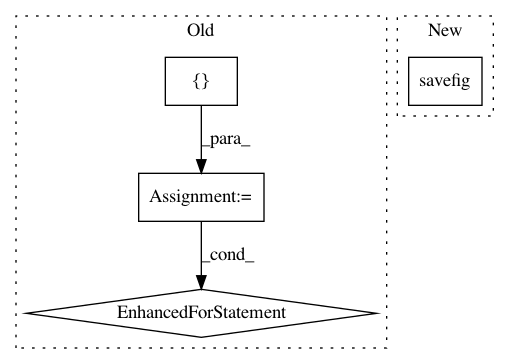

55107185fbb36dda8069409173fb570ea9094c73,plotnine/ggplot.py,,save_as_pdf_pages,#Any#Any#Any#Any#,758
Before Change
// If plots is already an iterator, this is a no-op; otherwise convert a
// list, etc. to an iterator
plots = iter(plots)
peek = []
// filename, depends on the object
if filename is None:
// Take the first element from the iterator, store it, and use it to
// generate a file name
peek = [next(plots)]
filename = peek[0]._save_filename("pdf")
if path:
filename = os.path.join(path, filename)
if verbose:
warn("Filename: {}".format(filename), PlotnineWarning)
with PdfPages(filename) as pdf:
// Re-add the first element to the iterator, if it was removed
for plot in chain(peek, plots):
try:
fig = figure[0] = plot.draw()
// as in ggplot.save()
facecolor = fig.get_facecolor()
edgecolor = fig.get_edgecolor()
if facecolor:
fig_kwargs["facecolor"] = facecolor
if edgecolor:
fig_kwargs["edgecolor"] = edgecolor
// Save as a page in the PDF file
pdf.savefig(figure[0], **fig_kwargs)
except AttributeError as err:
msg = "non-ggplot object of %s: %s" % (type(plot), plot)
raise TypeError(msg) from err
except Exception:
raise
finally:
// Close the figure whether or not there was an exception, to
// conserve memory when plotting a large number of pages
figure[0] and plt.close(figure[0])
class plot_context:
Context to setup the environment within with the plot is built
After Change
for plot in plots:
fig = plot.draw()
// Save as a page in the PDF file
pdf.savefig(fig, **fig_kwargs)
class plot_context:
In pattern: SUPERPATTERN
Frequency: 4
Non-data size: 4
Instances
Project Name: has2k1/plotnine
Commit Name: 55107185fbb36dda8069409173fb570ea9094c73
Time: 2020-11-30
Author: has2k1@gmail.com
File Name: plotnine/ggplot.py
Class Name:
Method Name: save_as_pdf_pages
Project Name: brian-team/brian2
Commit Name: f1341aadc81819ed2bb3223a9fa878ec7b25f547
Time: 2015-12-01
Author: dg.github@thesamovar.net
File Name: dev/benchmarks/compare_to_brian1.py
Class Name:
Method Name:
Project Name: matplotlib/matplotlib
Commit Name: 39fb7b5b96ea46aca94099d166106365eaf0647e
Time: 2018-03-08
Author: anntzer.lee@gmail.com
File Name: lib/matplotlib/tests/test_backend_ps.py
Class Name:
Method Name: test_savefig_to_stringio
Project Name: tgsmith61591/pmdarima
Commit Name: 1695474f2c38c008638a2540e715876ec29fb0f2
Time: 2018-12-02
Author: drotarcharles@yahoo.com
File Name: pmdarima/arima/tests/test_arima.py
Class Name:
Method Name: test_plot_diagnostics